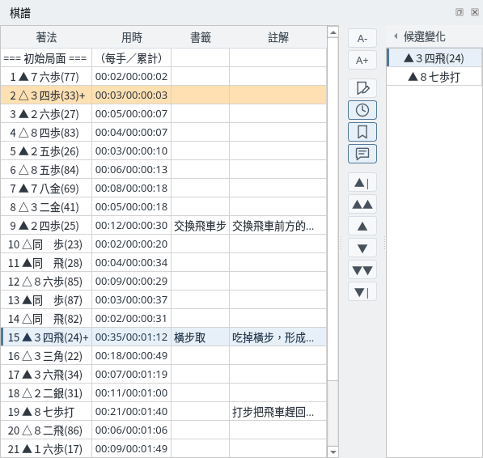
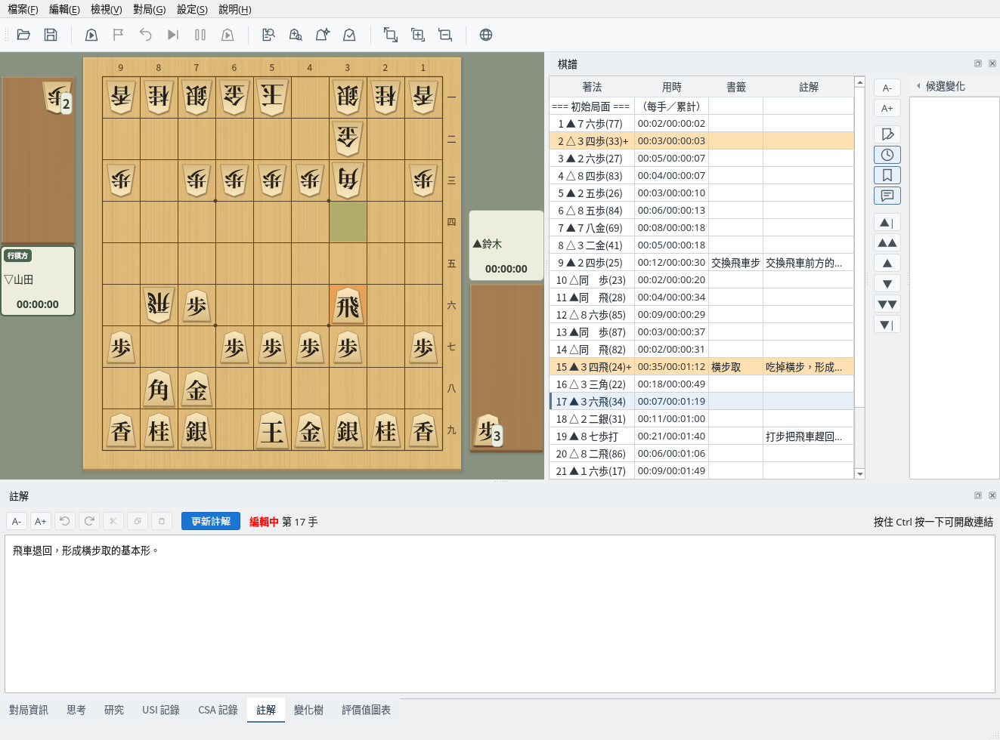
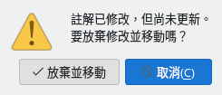
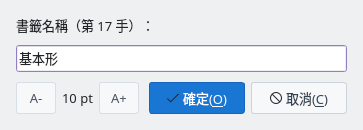
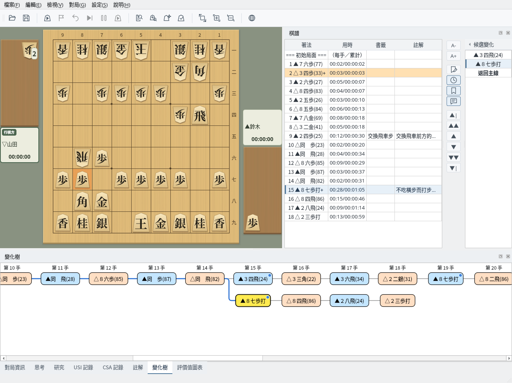

棋譜欄的顯示、註解、書籤與分支棋譜操作
截圖於 Linux 上以繁體中文介面擷取。
以清單顯示著法、用時、書籤和註解
棋譜欄從初始局面開始依序列出著法、用時（每手／累計）、書籤和註解。選擇一手後，棋盤會顯示該局面，「註解」和「變化樹」分頁也會切換到同一手。可以按一下該行、使用 ↑↓ 鍵或右側的按鈕選擇著法。
有變化的著法背景為橘色，著法末尾帶有「+」。最右側的「候選變化」會在所選著法有其他著法時列出這些候選（按一下「◂ 候選變化」可以摺疊）。
可以在「設定」→「棋譜與棋盤座標表示」中切換日文記法（▲７六歩）和西文記法（▲P-7f）。預設跟隨介面語言（日文和中文使用日文記法，英文使用西文記法）。詳情請參閱多語言支援（英文）指南。

棋譜欄：用時、書籤、註解欄與第 15 手的候選變化
為所選著法寫註解
畫面下方的「註解」分頁顯示所選著法的註解。修改後會顯示「編輯中」，按一下「更新註解」（Ctrl+Enter）即可套用到棋譜。套用後的註解也會顯示在棋譜欄的註解欄中。
註解中的網址會變成連結，按住 Ctrl 按一下即可開啟。左側的按鈕可以調整字型大小，以及復原、重做、剪下、複製、貼上。註解可以儲存在 KIF、KI2、CSA、JKF 格式中。

註解：正在修改第 17 手的註解（編輯中）
如果沒有按一下「更新註解」就要移到其他著法，會顯示確認對話方塊。按一下「放棄並移動」會放棄修改並移動，按一下「取消」則停止移動，回到原來的著法。無論是按一下棋譜欄、按鈕、候選變化還是變化樹，都會這樣確認。

未更新註解的確認
為想要標記的著法命名
選擇一手後按一下「編輯書籤」按鈕，輸入書籤名稱並按一下「確定」，書籤就會顯示在棋譜欄的書籤欄中。名稱為空時按一下「確定」會刪除書籤。
書籤儲存在 KIF、KI2 格式中，讀取時會再次顯示。

編輯書籤
切換並檢視其他變化的著法
選擇有變化的著法後，候選變化中會列出主線的著法和其他著法。按一下候選即可切換到該變化，棋譜欄也會顯示該變化的著法。顯示變化時，按一下清單最後的「返回主線」可回到主線的同一手。
「變化樹」分頁可以一覽主線（最上面一行）和各個變化。目前的著法以黃色顯示，按一下著法即可移動到該局面。目前著法在可見範圍之外時，會自動捲動到能看到它的位置。可以儲存變化的格式請參閱棋譜管理指南。

變化：在第 15 手選擇「▲８七歩打」，並顯示變化樹